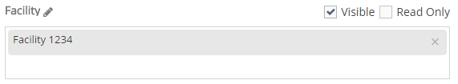
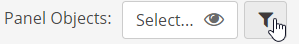

The Panel Objects filter sets the scope for the System Model objects used in the panel.
In a Numeric Data panel, data is filtered by the selected requirements and parent objects.
In a Workflow Panel, workflows are filtered by the objects with which they are associated (if any).
In an Event Panel, events are filtered by the associated requirements.
In a Task Panel, tasks are filtered by the associated requirements.
Objects available for the panels on a page are set first by the Page Objects filter (see Page Configuration). All object selections are limited to the objects defined for the page (except when Ignore Page Filters is active), which may then be further filtered by the panel.
The panel designer can decide whether the user has the ability to change the filter on a panel or whether the objects will be read only.
To edit the Panel Objects filter:
From the page view, select Settings.
On the panel, select the Panel Objects box.
Select the pencil icon to edit the name of each object type as it will be displayed in the panel. The first object (default name Panel Objects) is the label that will appear next to the object selector on the panel, if visible.
The eyeball icon indicates whether the object selector will be visible. Click to disable it if you do not want to show the object selector on the panel. If the object selector is not visible, object selection by users will effectively be disabled.
General Settings
Click on the carat next to General Settings to adjust the following selection options for users:
Read Only: If selected, all object types will be read-only. Users will not be able to change the objects selected for the panel.
Allow Multiple Selections: If false, users will be limited to one selection per level. If true, users can select multiple objects at any level that is visible and not read only. In any case, users are limited to the object scope set for the page.
Auto-Select One Object: Requires one object to be selected for the page (forcing a filter to be invoked). By default, the first object in the list will be selected.
Allow Selection at Any Level: If true, user may start object selection at any level (i.e., start searching by Facility without being required to first select a Division). Child objects will be filtered by the selected parent.
Ignore Page Filters: If true, the Object Type Settings in this panel will override the Object Type Settings for the page.
Show User All Objects in System: If true, user may select any object in the system, regardless of their Management System object permissions. Access to view or edit data will vary by the permission requirements of the panel's data type (Numeric, Workflow, Event, or Task).
The Show User All Objects in System setting is only available to users who are in the Administrators group and members of the app role Portal Administrators.
Object Type Settings
For each object type (Division, Facility, Unit, Requirement) you can set the following properties:

Visible: Specifies if the object name is visible on the panel.
Read Only: Specifies whether the objects are read only or if the user can edit the selected objects. In order to edit the objects, Read Only must be false and Visible must be True.
Name Select the pencil icon to edit the object type name. For example, if Facilities in your customer system actually represent departments or locations, you can change the caption accordingly to make it more sensible for users.
Objects Sets the filter (by name) for the objects that will be available to users. Select the box and enter a few characters to initiate a search, then select the matching object(s) you want. You may add multiple objects by name. User will be limited to selecting matching object names (for which they have permission). If the object selection is blank, users will be able to select any objects at this level within the scope of the page filter for display in the panel.
Property Filter
The property filter allows you to filter the results displayed on the panel by object properties. For example, you may filter Facilities based on the value of a Facility property called Facility Type.
Multiple filters may be added, using AND logic only. Filters will be applied in the order in which they are specified. In addition to custom fields, you may filter by the native fields Name, Active Date and Inactive Date.
To apply a property filter:
Select the Filter button next to the Panel Objects selection.

In the filter dialog, click Add.
Select an object type whose properties you want to filter by.
Click the list selector in the Field Name to see available fields. Scroll to select a field, or enter a few characters to search for a field by name. Select the field you want from the list.
Select a search operator, then the value to filter by (options depend on field type).

 next to General Settings to adjust the following selection options for users:
next to General Settings to adjust the following selection options for users: